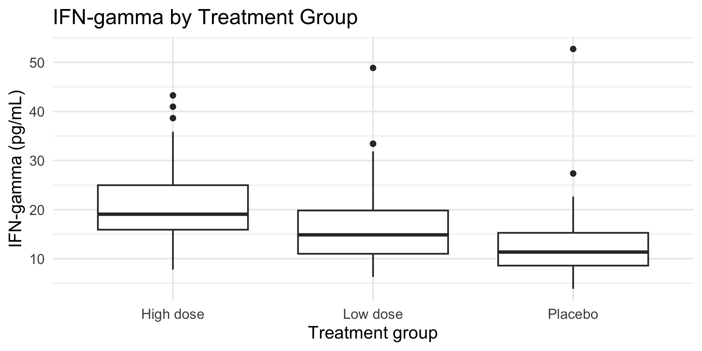
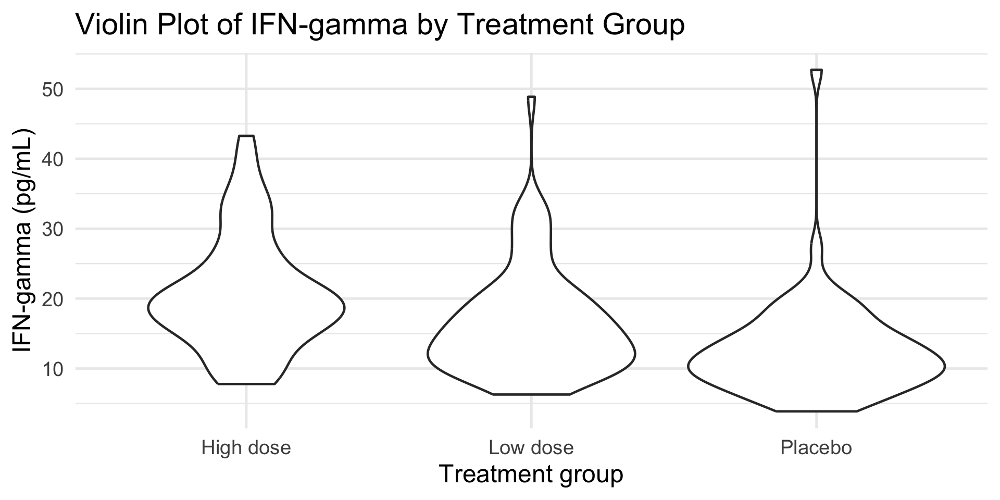
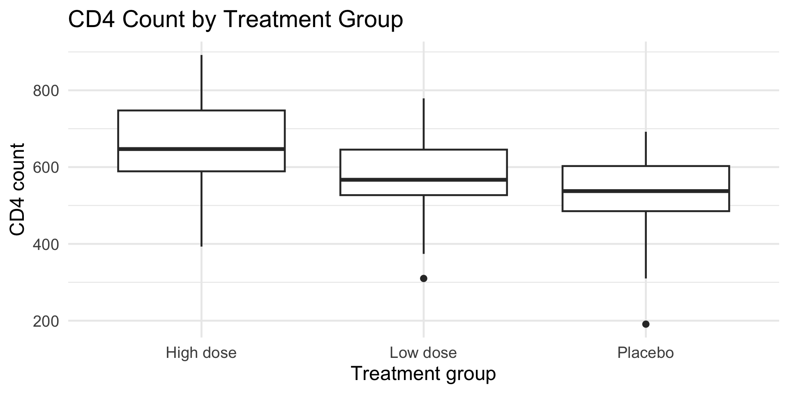
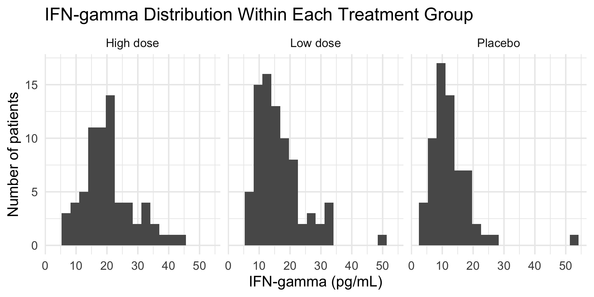
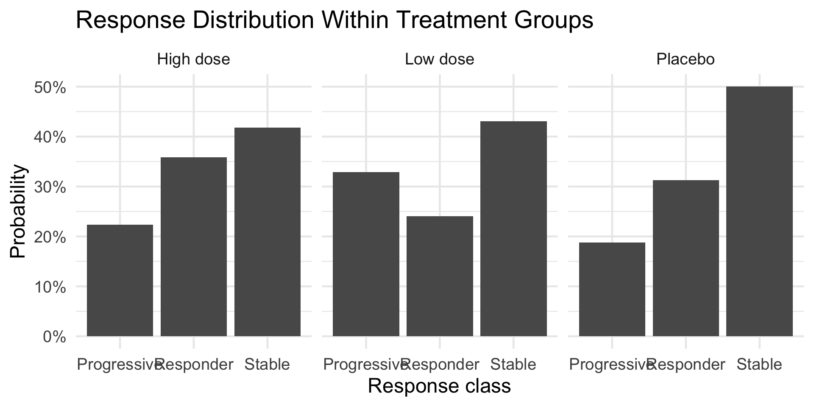

Course theme: Descriptive Statistics and Probability
Central focus of this lecture block: group-level summaries and comparative plots
Guiding question: How do group summaries and comparative plots reveal differences in location, spread, and distribution?
This lecture block stays within descriptive statistics. The goal is not yet to estimate a final regression model or test a formal causal claim. The goal is to describe how a variable behaves within clinically meaningful groups such as treatment arms, disease-status categories, or cohort strata.
In biomedical data analysis, a single overall summary can hide clinically meaningful heterogeneity.
A pooled mean or a pooled plot may suggest that a biomarker has one typical pattern, even when patients in different treatment groups show very different distributions.
That is why descriptive analysis often moves from:
\[ \text{overall summary} \rightarrow \text{group-specific summary} \rightarrow \text{comparative plot} \rightarrow \text{scientific interpretation} \]
In one sentence, this expression states that descriptive group analysis starts by summarizing the full sample, then stratifies by a clinically meaningful grouping variable, then visualizes the group-specific patterns, and finally interprets those patterns in scientific terms.
Key elements of the formula
Package context
tibble(), group_by(), summarise(), count(), mutate(), and ggplot()percent_format() converts proportions into percentages for easier interpretationggplot2 with additional plotting tools for multivariable exploration; it is loaded here as part of a broader descriptive workflow even though the main examples in this block rely primarily on ggplot2theme_set(theme_minimal(base_size = 18)) establishes a clean plotting theme and readable font size for every figure that followsset.seed(2026) fixes the random-number seed so the simulated teaching example is reproducibleCentral focus: descriptive analysis often compares groups defined by treatment, disease status, or cohort membership.
This lecture block asks:
How do group summaries and comparative plots reveal differences in location, spread, and distribution?
The key idea is that descriptive statistics become more informative once they are aligned to the clinical structure of the study. In practice, investigators rarely care only about the overall distribution of a biomarker. They want to know whether distributions differ by exposure, intervention, or disease subgroup.
This block focuses on:
Key terms for this block
Before looking at individual tables and plots, it is important to define what a group comparison means in descriptive statistics.
A group comparison asks whether the observed values of a variable look different once the sample is partitioned by a clinically meaningful categorical variable such as treatment arm, disease status, or cohort membership.
In this lecture, the phrase group-level summaries and comparative plots means that we are not only describing one variable overall. We are describing how that variable behaves within each subgroup and then comparing those subgroup-specific descriptions across groups.
Why this matters in biomedical data
This framing is consistent with the descriptive emphasis in Peck and Olsen, the applied data-science perspective in Bruce, Bruce, and Gedeck, and the sampling logic emphasized by Cochran: subgroup summaries are meaningful only because the observed sample is being used to describe patterns in a larger scientific population.
When a summary table reports a mean by group, it is describing the arithmetic average within each subgroup.
The mean is most informative when we want a measure of average level that uses every observed value directly. Because every value contributes to the mean, very high or very low observations can pull it upward or downward.
When a summary table reports a median by group, it is describing the middle ordered value within each subgroup.
The median is most informative when we want a measure of central location that is less sensitive to skewness or unusually large values. For right-skewed biomarkers, the median often aligns more closely with the value observed for a typical patient.
How to compare mean and median across groups
Within the logic of this lecture, mean and median are not competing summaries. They are complementary summaries that help us understand location under different distributional shapes.
A group summary table is most useful when it is read systematically.
Key things to look for universally when comparing groups
This checklist is useful across nearly all grouped descriptive summaries in biomedical research, whether the variable is a cytokine concentration, a cell count, a length-of-stay measure, or a categorical response profile.
Boxplots and violin plots answer related but not identical descriptive questions.
A boxplot is most effective when we want a compact summary of:
A violin plot is most effective when we also want to inspect the internal shape of the distribution, including whether the distribution appears concentrated, skewed, or possibly multimodal.
Universal checklist for plot-based comparison across groups
In descriptive work, no single plot answers everything. That is why boxplots, violin plots, and grouped histograms often work best as complementary views of the same group comparison problem.
When we compute probability within groups, we are describing the internal composition of each subgroup.
For example, if a treatment arm has a 40% responder probability, that does not mean 40% of the entire study responded. It means that within that treatment arm, 40% of patients were responders.
This distinction matters because descriptive probability within groups is conditional on group membership.
In biomedical interpretation, this helps answer questions such as:
This kind of grouped probability table is often the categorical-data analogue of a grouped mean or grouped boxplot: instead of describing where values lie on a continuous scale, it describes how category membership is distributed within each subgroup.
Subgroup heterogeneity means that the observations within a group are not all tightly clustered around one common pattern.
In descriptive statistics, subgroup heterogeneity may appear as:
Why subgroup heterogeneity matters
A group with a high mean is not necessarily a uniform group. It may contain:
That is why descriptive analysis should never stop at one number alone. The mean may summarize the center, but the spread and shape help determine whether that center represents a homogeneous group or a heterogeneous one.
Suppose an immunotherapy study follows patients in three arms:
The study records interferon-gamma concentration, CD4 count, and clinical response class. The descriptive goal is to understand how the distributions differ across treatment groups.
This is a classic biomedical descriptive setting. The treatment variable defines the groups, IFN-gamma and CD4 count are continuous outcomes summarized within groups, and response class is a categorical outcome whose proportions can also be compared across groups.
set.seed(305)
group_df <- tibble(
patient_id = sprintf("G%03d", 1:210),
treatment = sample(c("Placebo", "Low dose", "High dose"), 210, replace = TRUE),
ifng = round(rlnorm(
210,
meanlog = c("Placebo" = log(11), "Low dose" = log(15), "High dose" = log(20))[treatment],
sdlog = 0.42
), 2),
cd4_count = round(rnorm(
210,
mean = c("Placebo" = 510, "Low dose" = 575, "High dose" = 645)[treatment],
sd = 95
)),
response_class = sample(c("Responder", "Stable", "Progressive"), 210, replace = TRUE,
prob = c(0.35, 0.40, 0.25))
)
group_df |> slice_head(n = 8)# A tibble: 8 × 5
patient_id treatment ifng cd4_count response_class
<chr> <chr> <dbl> <dbl> <chr>
1 G001 High dose 24.6 818 Stable
2 G002 High dose 17.6 655 Responder
3 G003 Placebo 15.2 512 Stable
4 G004 Low dose 12 703 Responder
5 G005 Low dose 33.4 567 Progressive
6 G006 High dose 7.78 751 Stable
7 G007 Low dose 9.48 562 Responder
8 G008 Low dose 8.92 631 Progressive How to read the simulation setup
tibble() creates a rectangular data object in tidyverse formatsample() assigns patients to treatment groups and response categoriesrlnorm() simulates a right-skewed biomarker distribution for IFN-gamma, which is common for inflammatory markersrnorm() simulates CD4 count from an approximately symmetric distributionslice_head(n = 8) prints the first eight rows so students can inspect variable structureWhy these distributions were chosen
A pooled summary can be useful, and group-level summaries answer a more targeted biomedical question:
How does the distribution differ by treatment or disease category?
This is still descriptive because the goal is to characterize patterns rather than to fit a final inferential model.
A pooled mean for IFN-gamma, for example, would combine placebo, low-dose, and high-dose patients into one number. That number may be mathematically correct for the entire sample, but it does not reveal whether the typical biomarker level rises with treatment intensity.
# A tibble: 3 × 4
treatment n mean_ifng sd_ifng
<chr> <int> <dbl> <dbl>
1 High dose 67 20.7 8.22
2 Low dose 79 16.4 7.65
3 Placebo 64 12.6 7.04The mean summarizes the average level within each treatment arm. The standard deviation shows variability among participants in the same arm.
The grouped mean is defined by:
\[ \bar{x}_g = \frac{1}{n_g}\sum_{i=1}^{n_g} x_{ig} \]
In one sentence, this formula states that the group mean equals the sum of all observed values in group \(g\) divided by the number of observations in that group.
Key elements of the formula
The group-specific standard deviation is:
\[ s_g = \sqrt{\frac{1}{n_g - 1}\sum_{i=1}^{n_g}(x_{ig} - \bar{x}_g)^2} \]
In one sentence, this formula states that the group standard deviation measures the typical distance of observations from the group mean by averaging squared deviations and then taking the square root.
Key elements of the formula
How to interpret the output
n tells us how many patients contribute to each treatment-specific summarymean_ifng compares average IFN-gamma across arms and therefore compares group locationsd_ifng compares within-group variability and therefore compares group spreadgroup_df |>
group_by(treatment) |>
summarise(
median_ifng = median(ifng),
iqr_ifng = IQR(ifng),
median_cd4 = median(cd4_count),
iqr_cd4 = IQR(cd4_count)
)# A tibble: 3 × 5
treatment median_ifng iqr_ifng median_cd4 iqr_cd4
<chr> <dbl> <dbl> <dbl> <dbl>
1 High dose 19.1 9.07 647 158.
2 Low dose 14.9 8.82 567 118.
3 Placebo 11.4 6.68 538. 118.Median and IQR are often especially informative for right-skewed biomarkers such as cytokines.
The median is the middle ordered value, and the interquartile range measures the width of the middle 50% of the distribution.
The IQR is defined as:
\[ \mathrm{IQR} = Q_3 - Q_1 \]
In one sentence, this formula states that the interquartile range equals the third quartile minus the first quartile, so it measures the spread of the central half of the observations.
Key elements of the formula
How to interpret the output
median_ifng provides a robust measure of group center for the right-skewed IFN-gamma variableiqr_ifng shows how wide the central bulk of IFN-gamma values is within each treatment armmedian_cd4 and iqr_cd4 provide the same descriptive comparison for CD4 count
A boxplot summarizes the median, the interquartile range, and the tails of the group-specific distributions.
R package and function context
ggplot2, which is part of the tidyverse, provides a grammar of graphics for building plots layer by layeraes(x = treatment, y = ifng) maps treatment group to the horizontal axis and IFN-gamma to the vertical axisgeom_boxplot() draws the boxplot summary for each grouplabs() adds the title and axis labels needed for scientific interpretationThe boxplot allows students to compare:
This is useful when a study question asks whether biomarker profiles differ across treatment conditions.
Key plot elements
How this plot answers the lecture question
Within the framing of this lecture, the boxplot is not just a generic picture of IFN-gamma. It is a comparative tool for evaluating whether treatment groups differ in:
If the high-dose group sits consistently higher on the y-axis than placebo, that suggests a higher typical IFN-gamma level. If one group has a taller box, that suggests more variability in the central portion of the distribution.

A violin plot retains the group comparison and also shows the shape of the distribution within each group.
R package and function context
geom_violin() estimates and displays a smoothed distribution for each groupKey plot interpretation
Within this lecture’s framing, the violin plot is especially useful when we want to compare not only center and spread, but also whether the internal shape of the IFN-gamma distribution differs across treatment arms.

The same descriptive strategy can be applied to another continuous variable, even when its distribution is more symmetric.
This slide is important because it shows that group comparison is a general descriptive strategy, not a method tied only to biomarkers with strong skewness. For CD4 count, the boxplots may look more balanced around the center, so mean-based and median-based summaries may tell a more similar story than they did for IFN-gamma.
Key plot interpretation

Faceted histograms show how distribution shape changes across groups.
R package and function context
geom_histogram(bins = 18) divides IFN-gamma into intervals and counts how many observations fall in each intervalfacet_wrap(~ treatment, nrow = 1) creates one histogram per treatment arm while keeping the same basic structure across panelsKey plot interpretation
Within the lecture’s framing, this plot addresses the question of how group membership changes the observed distribution, not just the average.
group_df |>
count(treatment, response_class) |>
group_by(treatment) |>
mutate(probability = n / sum(n))# A tibble: 9 × 4
# Groups: treatment [3]
treatment response_class n probability
<chr> <chr> <int> <dbl>
1 High dose Progressive 15 0.224
2 High dose Responder 24 0.358
3 High dose Stable 28 0.418
4 Low dose Progressive 26 0.329
5 Low dose Responder 19 0.241
6 Low dose Stable 34 0.430
7 Placebo Progressive 12 0.188
8 Placebo Responder 20 0.312
9 Placebo Stable 32 0.5 This table describes the conditional distribution of response class within each treatment arm.
The within-group probability is defined by:
\[ \hat{P}(Y = y \mid G = g) = \frac{n_{yg}}{n_g} \]
In one sentence, this formula states that the estimated probability of response category \(y\) within group \(g\) equals the number of patients in that response category and treatment group divided by the total number of patients in that treatment group.
Key elements of the formula
R package and function context
count(treatment, response_class) tallies the number of observations in each treatment-by-response combinationgroup_by(treatment) tells R to compute subsequent quantities separately within each treatment armmutate(probability = n / sum(n)) converts raw counts into within-group probabilitiesggplot(
group_df |>
count(treatment, response_class) |>
group_by(treatment) |>
mutate(probability = n / sum(n)),
aes(x = response_class, y = probability)
) +
geom_col() +
facet_wrap(~ treatment, nrow = 1) +
scale_y_continuous(labels = percent_format()) +
labs(
title = "Response Distribution Within Treatment Groups",
x = "Response class",
y = "Probability"
)
This plot makes the within-group response profile visible.
R package and function context
geom_col() draws bar heights equal to the supplied probability valuesfacet_wrap(~ treatment, nrow = 1) creates one probability display per treatment groupscale_y_continuous(labels = percent_format()) formats the y-axis as percentages rather than raw proportionsKey plot interpretation
Within the framing of this lecture, this figure extends group comparison from continuous outcomes to categorical outcomes. The same descriptive logic applies: stratify by group, summarize within group, then compare across groups.
A group summary table and a comparative plot answer complementary questions.
The table provides exact values such as:
The plot provides an immediate visual comparison of location, spread, and shape.
This pairing is central in biomedical reporting. Tables provide numerical precision, while plots provide pattern recognition. A reviewer may use the table to quote exact values and the figure to judge whether the underlying distributions are symmetric, skewed, tightly clustered, or heterogeneous across groups.
Group-level description is central in biomedical research because many studies are organized around treatment, disease subtype, or exposure class.
\[ \text{Group summaries} + \text{comparative plots} = \text{descriptive view of subgroup structure} \]
In one sentence, this formula states that descriptive understanding of subgroup structure comes from combining numerical summaries with visual comparisons.
The same variable can look different once it is stratified by group.
Final synthesis
These descriptive ideas align closely with the course texts:
Within this lecture, those texts collectively support a single principle: group comparison begins with careful descriptive characterization of center, spread, distribution, and subgroup heterogeneity.